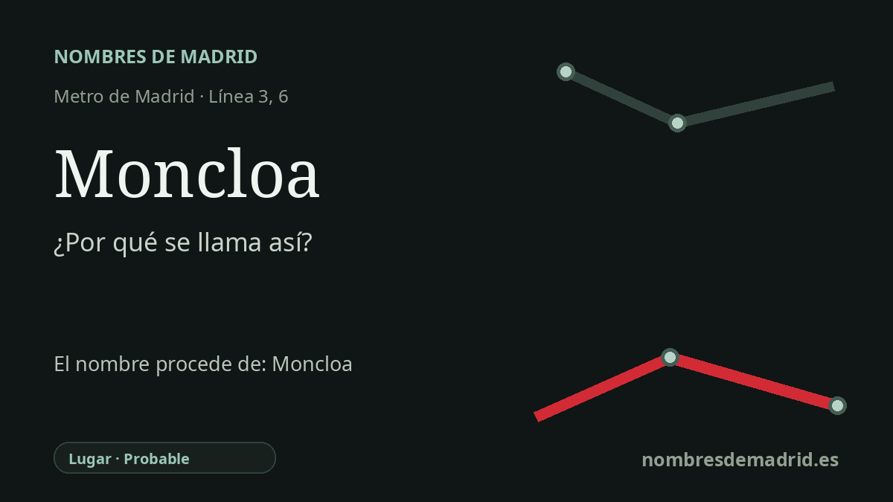

Publicado el · Investigación de Nombres de Madrid · Cómo verificamos cada origen · 11 fuentes consultadas
Respuesta rápida
La estación de Moncloa toma su nombre del área de Moncloa, cuyo topónimo procede de una finca histórica asociada a los condes de La Monclova. La cadena mejor documentada es Monclova > Moncloa en Madrid, no una derivación directa y probada del latín 'Mons Clovis'.
La historia del nombre
La estación de Moncloa recibe su nombre de su entorno inmediato: el área de Moncloa en el borde noroeste del centro de Madrid, junto a la plaza de Moncloa, la calle de la Princesa, el acceso a la Ciudad Universitaria y el actual gran intercambiador de autobuses. El nombre ya era un topónimo madrileño mucho antes de la apertura de la estación de Metro.
El origen mejor documentado no está en el Metro, sino en una finca histórica. Una guía gubernamental moderna sobre el complejo de La Moncloa explica que, en 1660, Gaspar de Haro y Guzmán adquirió dos propiedades hortícolas: la huerta de La Monclova y la huerta de Sora. Sus nombres procedían de propietarios anteriores, respectivamente el conde de La Monclova y el conde de Sora. La reedición del estudio de Joaquín Ezquerra del Bayo aporta una pista aún más precisa: la finca madrileña se había llamado antes Fuente el Sol, y su denominación Moncloa se debía a haber estado en poder del conde de La Monclova y de sus hijos hasta 1660.
Esto obliga a tratar con cuidado la explicación más remota. Algunas versiones populares derivan Monclova de formas latinas como 'Mons Clovis', vinculadas al lugar y castillo sevillano de La Monclova, cerca de Fuentes de Andalucía. Sin embargo, las fuentes autorizadas madrileñas consultadas prueban la transmisión a Madrid por el título nobiliario y la finca, pero no prueban de forma independiente la etimología latina del nombre sevillano. En la explicación pública, la formulación más segura es que la Moncloa madrileña procede de Monclova a través de los condes de La Monclova; la explicación latina antigua debe quedar como no verificada mientras no se añada una fuente toponímica especializada.
La cronología del transporte también corrige un dato frecuente. Moncloa entró en la red de Metro el 17 de julio de 1963, cuando la línea 3 se prolongó desde Argüelles hasta Moncloa. Los andenes de la línea 6 llegaron mucho después, el 10 de mayo de 1995, dentro de la apertura Laguna-Ciudad Universitaria que completó la línea Circular. En 2006, la estación de la línea 3 se cerró y reabrió en un nuevo trazado para ampliar el intercambiador y situar sus andenes de forma más cómoda respecto a la línea 6.
El topónimo del entorno ha adquirido además significados políticos y urbanos. El Palacio de la Moncloa reconstruido, levantado tras la destrucción del antiguo sitio durante la Guerra Civil, pasó a ser en 1977 la residencia oficial y sede del presidente del Gobierno. Cerca se encuentra el Arco de la Victoria, otra capa de la historia del siglo XX en Moncloa, aunque es contexto urbano y no el origen del nombre de la estación.